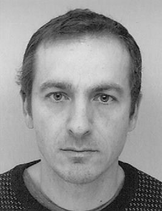
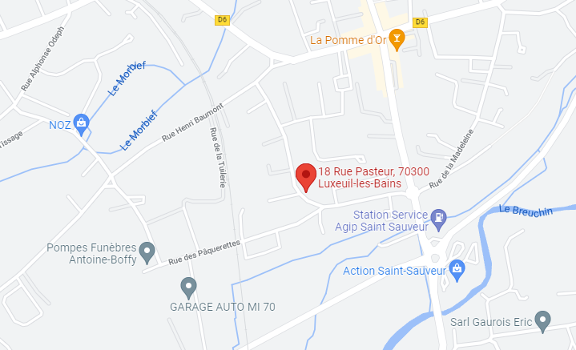

Jean-Baptiste
STORTI
Développeur Web
En cours de formation jusqu'au 13/03/2023

COMPÉTENCES ET CERTIFICATS
- HTML 5 Certifié le (en cours) par OpenClassrooms
- CSS 3 Certifié le (en cours) par OpenClassrooms
- Javascript Certifié le (en cours) par OpenClassrooms
- jQuery Certifié le (en cours) par OpenClassrooms
- PHP 7 Certifié le (en cours) par OpenClassrooms
- MySQL 5 Certifié le (en cours) par OpenClassrooms
- Symfony, Wordpress, Photoshop, Illustrator, Figma
- Coding style
- Optimisation pour le référencement (SEO)
- Sécurité informatique Certifié le 22/06/2022 par SecNum académie ANSSI
- Travail collaboratif
- Responsive design
EXPÉRIENCES PROFESSIONNELLES
-
Fev. 2016 - Fev. 2016 ASERTI
Technicien Électronique Maintenance préventive et curative électronique
-
Nov. 2014 - Déc. 2014 ACELTIS
Technicien Intégration de module géolocalisé sur des véhicules de service DIREST
-
Juin 2013 - Déc. 2013 EIS
Préparateur - Intégrateur informatique Intégration de serveur et pc client
-
Août 2011 - Fév. 2013 INDUSTECHNIC
Technicien électronique Maintenance préventive et curative électronique
STAGES EN ENTREPRISE
-
02/01/2023 - 24/02/2023 Recherche d'entreprise
Développement WEB
- Juin 2011 - Juil. 2011 SOCOMEC
R&D électronique
- Mai 2003 - Juin 2003 SAV CORA
Réparation électronique
FORMATIONS
- 2022-2023 Titre niveau Bac+2 de développeur WEB ONLINEFORMAPRO
- 2010-2011 Titre de niveau Bac+2 d'électronicien AFPA
- 2001-2005 BEP / BAC électronique Lycées
INTÉRÊTS
- Voyages en Camping-Car
- Footing
- Bricolage
- Cuisine